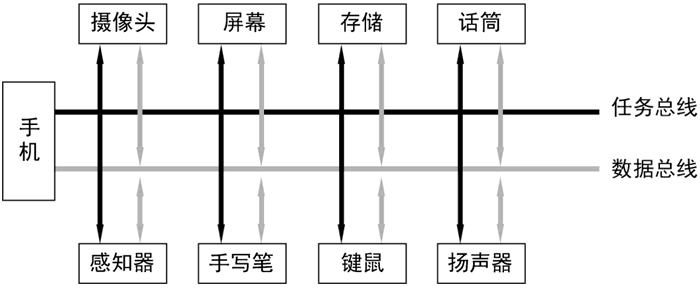
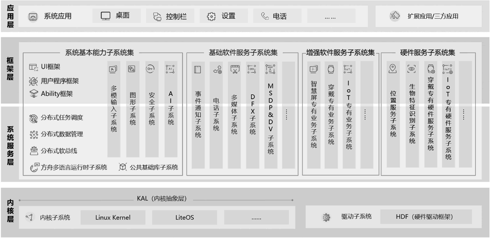

首页 > 编程笔记
鸿蒙操作系统介绍（非常详细）
2020 年 9 月，华为发布了鸿蒙操作系统（HarmonyOS）2，并发布了其开源版本 OpenHarmony。从此，鸿蒙操作系统的面纱终于被揭开了。
作为国人期待已久的操作系统，鸿蒙不仅仅承载着华为软件生态的未来，也代表着中国操作系统领域的一次重要尝试和突破。
鸿蒙的本意是指远古时代开天辟地之前的混沌之气，而鸿蒙操作系统则代表了华为从零开始开天辟地的决心和勇气。与学习 Android 和 iOS 不同，鸿蒙操作系统的软件生态刚刚起步，这是一片全新的领域等待你的探索。笔者相信，正在阅读这段文字的你一定对鸿蒙操作系统的未来充满信心。
鸿蒙操作系统针对物联网时代的来临而拥有了众多优秀特性，本节首先从宏观角度介绍其技术优势、特性和基本架构。希望广大读者对鸿蒙操作系统一见倾心。
开发一个完整的操作系统不是一件容易的事。华为消费者业务 CEO 余承东表示，鸿蒙操作系统在研发上已经投入了上亿元的资金，消耗了大量的人力和物力。然而，这些投入在短期内很难获得相应的收益回报。那么，华为为什么还要研发鸿蒙呢？
抛开政治因素和企业竞争不谈，鸿蒙操作系统具有一些其他操作系统所不具备的革命性创新，如分布式架构、微内核等。而这些创新正满足了目前物联网（Internet of Things，IoT）高速发展、移动设备互动互联等所带来的新需求。它们支撑着鸿蒙操作系统的未来，也是鸿蒙操作系统诞生的意义所在。
事实上，操作系统更迭的背后是设备能力与形态的革新。最初，PC 图形显示能力的提升成就了 macOS、Windows。21 世纪，移动设备的发展成就了 Symbian。随后，触摸技术的发展成就了 iOS 和 Android。如今，似乎即将迎来物联网时代。根据 Analytics 的统计结果，截至 2020 年上半年，全球物联网设备数量达到了 11.7 亿，而中国的物联网设备连接数量占到了全球 75%。
通过传统的操作系统构建物联网设备体系已经出现了许多弊端：利用 RTOS 进行物联网设备固件研发扩展性很低，且研发难度大。利用移动操作系统开发物联网设备固件则会出现占用内存大、启动慢、实时性低、高功耗、低能效等问题。另外，许多家庭已经拥有了不止一个物联网设备，这些设备之间的互联效率也很低。常常既没有统一的操作系统支持，也没有统一的指令和数据传输方案，碎片化非常严重，给用户带来较差的用户体验。
因此，从操作系统层面解决设备间的有效协同是整个问题的重中之重，这主要包含以下几个方面：
这是来源于物联网世界的召唤，响应了物联网世界的召唤，鸿蒙操作系统诞生了。
不过，微内核并不是一个新鲜名词。早在 20 世纪 80 年代，微内核的概念就已经被提出来了。例如著名的 minix 就是典型的微内核操作系统。
那么微内核有什么好处呢？由于内核精简，分配的任务少了，代码量也就少了，所以不容易出现系统漏洞和设计失误，因而提高了系统的安全性、稳定性和可维护性。另外，微内核通过网络可以方便地进行进程的统一调度，先天支持分布式操作系统。
不过，微内核也存在一些缺点，其中最为重要的就是性能较低。这是因为许多重要且常用的系统组件（如硬件驱动、系统服务等）被移出内核，而这些组件的通信又需要内核 IPC 的支持，因此原先只需要在内核内部完成的事情，现在需要内核在中间进行调度，性能自然就降下来了。长期以来，由于计算机硬件性能的限制，微内核并没有成为主流。
如今，微内核的概念再次引领潮流。这主要因为随着物联网的发展，许多小型的物联网设备开始寻求一种安全、稳定且轻巧的操作系统。背负着大量历史包袱的 Linux 宏内核操作系统显然不是最佳选择，因此，许多科技公司开始研发微内核操作系统。无独有偶，不仅华为在研发微内核的鸿蒙操作系统，谷歌也开始研发使用 Zircon 微内核的 Fuchsia 操作系统。
不过，微内核的性能问题也需要解决，鸿蒙操作系统采用了确定时延引擎和高性能 IPC 两大技术弥补了微内核低性能的缺陷。确定时延引擎可以为请求 IPC 调度的系统组件设置优先级，优先调度用户界面更新等重要功能组件，从而提高系统的实时性和流畅度。高性能IPC可使进程通信效率较现有系统提升 5 倍左右。
综上所述，微内核具有高稳定性、高安全性、高可维护性和高实时性。由于轻便的内核设计使得系统保持低功耗和低内存占用，因此鸿蒙操作系统选择了微内核。
目前，鸿蒙操作系统不仅支持了手机、手表、智慧屏等常规硬件，还支持了许多开发板，如海思 WiFi IoT 开发板、IMX6ULL 开发板等。今后，由于鸿蒙操作系统的开源性质，它将会支持更多的设备，如车机、平板计算机及各类开发板，成为真正的全场景操作系统。
全场景操作系统的一大优势就是可以利用其分布式的特征整合硬件资源。例如，在一个区域内，如家庭中，实现分布式任务调度、分布式数据管理等。
跨地区的物联网设备也能形成集群提供统一服务。在物联网技术的推动下，鸿蒙操作系统可以实现跨设备的无缝协同和一次开发多端部署的要求。
分布式软总线的主要特征如下：
通过分布式软总线，鸿蒙操作系统可以为处在统一网络内的设备提供高效通信能力，实现万物互联。
例如，同一个家庭中的手机、路由器和智慧屏可以以单一的超级虚拟终端的方式共享硬件资源。
应用流转是指同一个应用程序在不同设备上的迁移和迁回。例如，用户正在使用手机进行视频通话，但是此时不方便拿手机了，在此种应用情景下可以将该应用界面迁移到智慧屏上继续进行视频通话。当然，用户还可以再将视频通话界面迁回到手机上。
应用协同是指在不同的鸿蒙设备上显示同一个应用程序的不同功能组件。例如，在手机上显示新闻列表，在智慧屏上显示新闻内容，通过手机的新闻列表就可以流畅地切换智慧屏上的新闻内容。
综上所述，鸿蒙操作系统响应了时代的召唤，微内核是前提，分布式是手段，全场景是目的。鸿蒙操作系统的上述特性让鸿蒙本身不仅仅是现有移动操作系统的替代品，而是全新的分布式操作系统，为鸿蒙未来的发展提供动力源泉。
2020 年 9 月 10 日，华为发布了鸿蒙 2.0 操作系统，此时广大开发者才见到了鸿蒙操作系统的真面目：可用的虚拟机、可读的官方文档和由码云托管的 OpenHarmony 工程。
相对而言，鸿蒙操作系统的设备支持性较强，且拥有众多自主研发的技术优势。例如，鸿蒙不仅仅支持物联网设备，而且可以适用于手机、智慧屏等多种设备，成为为数不多的打通“南向”和“北向”的操作系统。
通过场景化的设计，依托微内核、分布式软总线等技术优势，鸿蒙操作系统的未来应当是光明的。
华为消费者业务 CEO 余承东在 2020 年华为开发者大会上表示“没有人能够熄灭满天的星光，每个开发者都是华为要汇聚的星星之火。”希望广大开发者一起努力，创建属于鸿蒙操作系统的未来。星星之火，可以燎原。
鸿蒙操作系统支持多种不同的操作系统内核。其中，LiteOS 是华为针对物联网设备发布的轻量级操作系统，其内核也为微内核，最小存储容量仅为 6KB。鸿蒙操作系统为了统一这些不同的内核接口，在内核子系统的顶层设计了内核抽象层（Kernel Abstract Layer，KAL）。
驱动子系统包含了鸿蒙操作系统驱动框架（HarmonyOS Driver Foundation，HDF）。HDF 为多种不同的硬件提供了统一的访问接口。
其中，系统基本能力子系统集最为重要，主要包含了4个部分：
为了提高应用性能，内核层也提供了一些应用层可以直接调用的接口，在必要时应用可以按需要调用内核层的功能。
Java 提供了细粒度的 UI 接口，采用命令式编程范式，并且提供了最为丰富的 API。JavaScript 提供了高层 UI 描述，采用声明式编程范式，目前其 API 较为有限。
事实上，开发者可以采用混合编程的方式，同时使用 Java 和 JavaScript 进行应用程序设计。例如，可以采用 Java 语言进行功能类模块的编程，实现业务逻辑，使用 JavaScript 语言进行界面编程，实现数据内容的展示。
在编程语言的选择上还需要注意以下几点：
推荐初学者使用 Java 语言开发鸿蒙应用程序。目前来讲，Java API 更为全面，而使用 JavaScript 最初是为了进行鸿蒙应用程序的 UI 设计，因此许多功能仍然需要 Java API 实现。
目前，运行鸿蒙操作系统的手机实际上具备了鸿蒙操作系统和 Android 操作系统的双重架构，既可以运行鸿蒙应用程序，也可以完美运行 Android 应用程序。从用户体验角度来讲，这种双重架构是透明的。用户完全可以将鸿蒙手机当作一个普通的 Android 手机来使用。通过这一优势，鸿蒙完全可以杀出一条血路，逐步构建鸿蒙的软件生态，并最终剥离 Android 体系架构。
但是，鸿蒙操作系统的设计并非完全照搬 Android 操作系统，而是取其精华去其糟粕。
一方面，Android 存在性能低下、框架复杂的固有缺陷，而鸿蒙操作系统经过底层的重新设计避免了这些问题。在 Android 体系中，使用 Java/Kotlin 语言开发的应用程序无法直接编译成为机器代码，因此需要 Dalvik、ART 等虚拟机的支持。虽然这些虚拟机针对移动设备经过了改造，但是其效率仍然远不及由 C、Objective-C 等语言编写的程序。鸿蒙操作系统的方舟运行时则可以直接将 Java 程序编译为机器代码，从而大大提高了其运行效率。
另外，Android 操作系统的框架非常复杂。其底层的 Linux 内核根本不是针对当前主流的移动设备和物联网设备所设计的，存在着许多历史包袱。而 Android 的设计当初为了快速迭代适应潮流，对框架内许多模块的性能进行了妥协，因此造就了如今复杂的 Android 系统框架。鸿蒙操作系统针对移动设备、物联网设备重新进行了框架设计，从而在性能上、功耗上都优于 Android。
另一方面，在鸿蒙应用程序开发中，无论是集成开发环境的设计还是 Ability 的设计，都在很大程度上参考了 Android。例如，DevEco Studio 集成开发环境的使用方法类似于 Android Studio，Ability 的概念类似于 Android 中的 Activity。这使得现有的 Android 应用程序开发者能够迅速地进行角色转换，以极低的学习成本参与到鸿蒙应用程序开发中。另外，为了保证鸿蒙操作系统能够迅速建立软件生态，占据一定的市场优势，现阶段的鸿蒙操作系统仍然包含了许多 Android 操作系统的特征，使得 Android 应用程序可以直接运行在鸿蒙操作系统之上。
鸿蒙、Android 和 iOS 的对比如下表所示。
作为国人期待已久的操作系统，鸿蒙不仅仅承载着华为软件生态的未来，也代表着中国操作系统领域的一次重要尝试和突破。
鸿蒙的本意是指远古时代开天辟地之前的混沌之气，而鸿蒙操作系统则代表了华为从零开始开天辟地的决心和勇气。与学习 Android 和 iOS 不同，鸿蒙操作系统的软件生态刚刚起步，这是一片全新的领域等待你的探索。笔者相信，正在阅读这段文字的你一定对鸿蒙操作系统的未来充满信心。
鸿蒙操作系统针对物联网时代的来临而拥有了众多优秀特性，本节首先从宏观角度介绍其技术优势、特性和基本架构。希望广大读者对鸿蒙操作系统一见倾心。
鸿蒙的历史背景
鸿蒙是“面向未来”的操作系统，拥有大量优秀的技术特性。接下来简单扼要地介绍鸿蒙操作系统诞生的历史背景。开发一个完整的操作系统不是一件容易的事。华为消费者业务 CEO 余承东表示，鸿蒙操作系统在研发上已经投入了上亿元的资金，消耗了大量的人力和物力。然而，这些投入在短期内很难获得相应的收益回报。那么，华为为什么还要研发鸿蒙呢？
抛开政治因素和企业竞争不谈，鸿蒙操作系统具有一些其他操作系统所不具备的革命性创新，如分布式架构、微内核等。而这些创新正满足了目前物联网（Internet of Things，IoT）高速发展、移动设备互动互联等所带来的新需求。它们支撑着鸿蒙操作系统的未来，也是鸿蒙操作系统诞生的意义所在。
事实上，操作系统更迭的背后是设备能力与形态的革新。最初，PC 图形显示能力的提升成就了 macOS、Windows。21 世纪，移动设备的发展成就了 Symbian。随后，触摸技术的发展成就了 iOS 和 Android。如今，似乎即将迎来物联网时代。根据 Analytics 的统计结果，截至 2020 年上半年，全球物联网设备数量达到了 11.7 亿，而中国的物联网设备连接数量占到了全球 75%。
通过传统的操作系统构建物联网设备体系已经出现了许多弊端：利用 RTOS 进行物联网设备固件研发扩展性很低，且研发难度大。利用移动操作系统开发物联网设备固件则会出现占用内存大、启动慢、实时性低、高功耗、低能效等问题。另外，许多家庭已经拥有了不止一个物联网设备，这些设备之间的互联效率也很低。常常既没有统一的操作系统支持，也没有统一的指令和数据传输方案，碎片化非常严重，给用户带来较差的用户体验。
因此，从操作系统层面解决设备间的有效协同是整个问题的重中之重，这主要包含以下几个方面：
- 在操作系统层面，统一物联网设备的通信接口，为用户提供统一的使用体验，为开发者提供统一的开发方案。
- 在设备通信层面，打通物联网之间的桥梁，构建多设备的统一体，方便进行数据和指令的互通。
- 在应用程序层面，实现在多个物联网设备上进行应用协同。
这是来源于物联网世界的召唤，响应了物联网世界的召唤，鸿蒙操作系统诞生了。
鸿蒙操作系统的设计理念
鸿蒙操作系统是基于微内核的全场景分布式操作系统，这里面有 3 个关键词：“微内核”“全场景”和“分布式”，而这 3 项创新性理念可以说均是为了物联网设备而设计的。接下来，让我们仔细分析一下。1、鸿蒙操作系统的内核为微内核
微内核（Micro Kernel）是相对于宏内核（Monolithic Kernel）而言的，是一种内核的设计理念，即仅保留内存管理、任务调度和进程间通信（Inter-Process Communication，IPC）等内核基础性的必要功能，将所有能被移出内核的功能全部移出，保证内核的最小化，使其“粒度”最小。不过，微内核并不是一个新鲜名词。早在 20 世纪 80 年代，微内核的概念就已经被提出来了。例如著名的 minix 就是典型的微内核操作系统。
那么微内核有什么好处呢？由于内核精简，分配的任务少了，代码量也就少了，所以不容易出现系统漏洞和设计失误，因而提高了系统的安全性、稳定性和可维护性。另外，微内核通过网络可以方便地进行进程的统一调度，先天支持分布式操作系统。
不过，微内核也存在一些缺点，其中最为重要的就是性能较低。这是因为许多重要且常用的系统组件（如硬件驱动、系统服务等）被移出内核，而这些组件的通信又需要内核 IPC 的支持，因此原先只需要在内核内部完成的事情，现在需要内核在中间进行调度，性能自然就降下来了。长期以来，由于计算机硬件性能的限制，微内核并没有成为主流。
如今，微内核的概念再次引领潮流。这主要因为随着物联网的发展，许多小型的物联网设备开始寻求一种安全、稳定且轻巧的操作系统。背负着大量历史包袱的 Linux 宏内核操作系统显然不是最佳选择，因此，许多科技公司开始研发微内核操作系统。无独有偶，不仅华为在研发微内核的鸿蒙操作系统，谷歌也开始研发使用 Zircon 微内核的 Fuchsia 操作系统。
不过，微内核的性能问题也需要解决，鸿蒙操作系统采用了确定时延引擎和高性能 IPC 两大技术弥补了微内核低性能的缺陷。确定时延引擎可以为请求 IPC 调度的系统组件设置优先级，优先调度用户界面更新等重要功能组件，从而提高系统的实时性和流畅度。高性能IPC可使进程通信效率较现有系统提升 5 倍左右。
综上所述，微内核具有高稳定性、高安全性、高可维护性和高实时性。由于轻便的内核设计使得系统保持低功耗和低内存占用，因此鸿蒙操作系统选择了微内核。
2、鸿蒙操作系统是全场景操作系统
鸿蒙操作系统不仅仅是可以运行在手机、手表上的移动操作系统，更是可以运行在各种各样的物联网设备上的全场景操作系统。目前，鸿蒙操作系统不仅支持了手机、手表、智慧屏等常规硬件，还支持了许多开发板，如海思 WiFi IoT 开发板、IMX6ULL 开发板等。今后，由于鸿蒙操作系统的开源性质，它将会支持更多的设备，如车机、平板计算机及各类开发板，成为真正的全场景操作系统。
全场景操作系统的一大优势就是可以利用其分布式的特征整合硬件资源。例如，在一个区域内，如家庭中，实现分布式任务调度、分布式数据管理等。
跨地区的物联网设备也能形成集群提供统一服务。在物联网技术的推动下，鸿蒙操作系统可以实现跨设备的无缝协同和一次开发多端部署的要求。
3、鸿蒙操作系统是分布式操作系统
得益于微内核，鸿蒙操作系统从底层就具备了分布式操作系统的特性，包括分布式软总线、分布式设备虚拟化、分布式数据管理、分布式任务调度等关键技术。1) 分布式软总线
分布式软总线是鸿蒙操作系统分布式能力的最为基础的特性，其设计理念参考了计算机硬件总线：以手机为中心将总线分为任务总线（传输指令）和数据总线（同步数据），如图 1 所示。

图 1 分布式软总线
图 1 分布式软总线
分布式软总线的主要特征如下：
- 分布式软总线针对不稳定的无线环境进行了优化，相对于传统的传输协议具有高带宽、低时延、高可靠、开放、标准等特点。
- 通过分布式软总线可以实现设备间快速自动发现（同一网络且登录同一华为账号）。
- 分布式软总线支持并可以整合 WiFi、蓝牙、USB 等多种有线/无线传输协议。通过手机等中转设备，可以打通蓝牙设备与 WiFi 设备之间的隔离，使其互联互通。
- 分布式软总线具有极简 API 和极简协议，不仅方便了开发者，而且有效地提高了网络传输能力。开发者只需面对 1 个逻辑协议，而不感知其具体的传输协议。
通过分布式软总线，鸿蒙操作系统可以为处在统一网络内的设备提供高效通信能力，实现万物互联。
2) 分布式设备虚拟化
分布式设备虚拟化建立在分布式软总线的基础上，可以实现多个鸿蒙设备性能和资源的整合，形成超级虚拟终端。例如，同一个家庭中的手机、路由器和智慧屏可以以单一的超级虚拟终端的方式共享硬件资源。
3) 分布式数据管理
分布式数据管理建立在分布式软总线的基础上，可以实现多个鸿蒙设备之间进行高效数据同步和管理。4) 分布式任务调度
分布式任务调度建立在分布式软总线和分布式数据管理之上，可以实现多个鸿蒙设备间高效地进行应用流转和协同。应用流转是指同一个应用程序在不同设备上的迁移和迁回。例如，用户正在使用手机进行视频通话，但是此时不方便拿手机了，在此种应用情景下可以将该应用界面迁移到智慧屏上继续进行视频通话。当然，用户还可以再将视频通话界面迁回到手机上。
应用协同是指在不同的鸿蒙设备上显示同一个应用程序的不同功能组件。例如，在手机上显示新闻列表，在智慧屏上显示新闻内容，通过手机的新闻列表就可以流畅地切换智慧屏上的新闻内容。
综上所述，鸿蒙操作系统响应了时代的召唤，微内核是前提，分布式是手段，全场景是目的。鸿蒙操作系统的上述特性让鸿蒙本身不仅仅是现有移动操作系统的替代品，而是全新的分布式操作系统，为鸿蒙未来的发展提供动力源泉。
鸿蒙操作系统的未来
鸿蒙操作系统非常年轻。2019 年 5 月 24 日，鸿蒙操作系统第一次与大众见面，随后华为首先将其应用在智慧屏设备上。同年 9 月，华为宣布鸿蒙开源。2020 年 9 月 10 日，华为发布了鸿蒙 2.0 操作系统，此时广大开发者才见到了鸿蒙操作系统的真面目：可用的虚拟机、可读的官方文档和由码云托管的 OpenHarmony 工程。
事实上，鸿蒙操作系统并不孤单，许多企业早已预测到了物联网发展的广阔前景，并产出了适合于物联网设备的操作系统，其中典型的物联网操作系统包括谷歌的 Fuchsia、三星的 Tizen OS、小米的 Vela、腾讯的 TenCentOS tiny、阿里的 AliOS 等，可以说是百花齐放了。注意，OpenHarmony 工程的开源托管网址为 https://gitee.com/openharmony。鸿蒙 SDK 中的包名均以 ohos 开头，这是 OpenHarmony Operation System 的缩写。
相对而言，鸿蒙操作系统的设备支持性较强，且拥有众多自主研发的技术优势。例如，鸿蒙不仅仅支持物联网设备，而且可以适用于手机、智慧屏等多种设备，成为为数不多的打通“南向”和“北向”的操作系统。
为此，华为提出了 1+8+N 战略，其中 1 代表了手机，8 代表了 8 种常用设备（PC、平板、智慧屏、音箱、眼镜、手表、车机、耳机），N 代表了更加广泛的物联网设备。通过鸿蒙操作系统，这些设备可以有机地结合在一起，形成统一的“超级智能终端”。这个“超级智能终端”既可以实现软件的伸缩，也可以实现硬件的伸缩，如下表所示。注意：在互联网上，读者可能遇到过鸿蒙操作系统的“北向”开发和“南向”开发的概念。这里的“北向”开发就是指在应用层上的应用程序开发，而“南向”开发则是指针对运行在各种设备（或开发板）上的鸿蒙操作系统硬件功能开发。那么，为什么在学习 Android 或 iOS 等传统移动操作系统时很少遇到“南向”和“北向”的词汇呢？这是因为鸿蒙操作系统是全场景操作系统，是少有的打通“南向”和“北向”开发的操作系统。
| 伸缩性 | 功能机 | 智能机 | 超级智能终端 |
|---|---|---|---|
| 软件可变 | × | √ | √ |
| 硬件可变 | × | × | √ |
通过场景化的设计，依托微内核、分布式软总线等技术优势，鸿蒙操作系统的未来应当是光明的。
华为消费者业务 CEO 余承东在 2020 年华为开发者大会上表示“没有人能够熄灭满天的星光，每个开发者都是华为要汇聚的星星之火。”希望广大开发者一起努力，创建属于鸿蒙操作系统的未来。星星之火，可以燎原。
鸿蒙操作系统的技术特性
接下来从技术层面剖析鸿蒙操作系统的基本架构和开发框架，并与常见的移动操作系统进行对比分析。1、鸿蒙操作系统的基本架构
鸿蒙操作系统的基本架构包括内核层、系统服务层、框架层和应用层，如图 2 所示。

图 2 鸿蒙操作系统的基本架构
图 2 鸿蒙操作系统的基本架构
1) 内核层
内核层包含了内核子系统和驱动子系统。鸿蒙操作系统支持多种不同的操作系统内核。其中，LiteOS 是华为针对物联网设备发布的轻量级操作系统，其内核也为微内核，最小存储容量仅为 6KB。鸿蒙操作系统为了统一这些不同的内核接口，在内核子系统的顶层设计了内核抽象层（Kernel Abstract Layer，KAL）。
驱动子系统包含了鸿蒙操作系统驱动框架（HarmonyOS Driver Foundation，HDF）。HDF 为多种不同的硬件提供了统一的访问接口。
2) 系统服务层与框架层
系统基本能力子系统集、基础软件服务子系统集、增强软件服务子系统集、硬件服务子系统集横跨了系统服务层和框架层，为应用层程序提供了 API。对于具体的设备和应用领域，开发者可根据实际情况裁剪掉这些子系统集内部不需要的功能模块：- 系统基本能力子系统集提供了基础特征的功能模块，例如方舟多语言运行时、分布式框架、Ability框架、UI框架等。
- 基础软件服务子系统集提供了具有公共性的软件服务，例如事件通知、电话通话、多媒体播放等。
- 增强软件服务子系统集针对不同设备提供差异化的软件服务，包括为智慧屏设备提供的智慧屏专有业务子系统，为穿戴设备提供了穿戴专有业务子系统等。
- 硬件服务子系统集为应用提供了硬件模块的访问能力，包括用于获取当前设备位置信息的位置服务子系统，用于指纹验证信息的生物特征识别子系统等。
其中，系统基本能力子系统集最为重要，主要包含了4个部分：
- 方舟多语言运行时子系统：在 Android 诞生的初期，其性能问题常常被广大用户诟病。为此，华为研发了方舟编译体系。方舟编译体系包含方舟编译器和方舟多语言运行时子系统。其中，方舟编译器（Ark Compiler）是 2019 年推出的完全自主研发的开源多语言静态编译器，可用于编译 Java、Kotlin、JavaScript、C/C++ 等语言程序，可直接将目标程序编译为机器语言。在鸿蒙操作系统中，通过方舟多语言运行时子系统的支持，可有效地提高 Java 等语言程序的运行效率，从而提高软件性能。综上所述，方舟多语言运行时子系统是鸿蒙操作系统中的重要一环，让鸿蒙操作系统拥有优秀的性能优势。
- 分布式框架：分布式软总线、分布式数据管理、分布式任务调度为鸿蒙分布式操作系统提供系统服务层基础，为分布式应用运行、调度、迁移操作提供基础能力。
- 用户程序框架、UI 框架、Ability 框架：这一部分构建了应用程序的主要框架模型，为应用程序的界面开发、Ability 能力开发等提供 API 基础。在每个鸿蒙应用程序中都少不了这些框架的身影。掌握这些框架是学习鸿蒙应用程序开发的核心内容。
- 公共基础库子系统等重要子系统：除了公共基础库子系统以外，多模输入子系统、图形子系统、安全子系统和 AI 子系统均属于重要的基础子系统。开发者在具体的开发实践中可以按需要使用这些子系统的功能。
3) 应用层
应用层是指鸿蒙操作系统中各种系统应用和第三方应用。为了提高应用性能，内核层也提供了一些应用层可以直接调用的接口，在必要时应用可以按需要调用内核层的功能。
2、鸿蒙应用程序的编程语言
目前，鸿蒙应用程序可以通过两种编程语言进行开发：Java 和 JavaScript。Java 提供了细粒度的 UI 接口，采用命令式编程范式，并且提供了最为丰富的 API。JavaScript 提供了高层 UI 描述，采用声明式编程范式，目前其 API 较为有限。
事实上，开发者可以采用混合编程的方式，同时使用 Java 和 JavaScript 进行应用程序设计。例如，可以采用 Java 语言进行功能类模块的编程，实现业务逻辑，使用 JavaScript 语言进行界面编程，实现数据内容的展示。
在编程语言的选择上还需要注意以下几点：
- JavaScript 编程是建立在鸿蒙能力跨平台环境（Ability Cross-platform Environment，ACE）之上的，因此其性能可能略低于 Java。虽然这种性能差异用户可能体验不到，但是仍然不建议开发者使用JavaScript 实现过于复杂的业务逻辑。
- 在对轻量级可穿戴设备（Lite Wearable）进行应用开发时，只能使用 JavaScript 编程。
- 可以通过 Native C++ 的方式编写对性能敏感的无界面功能模块。
推荐初学者使用 Java 语言开发鸿蒙应用程序。目前来讲，Java API 更为全面，而使用 JavaScript 最初是为了进行鸿蒙应用程序的 UI 设计，因此许多功能仍然需要 Java API 实现。
注意：从系统框架上，笔者并不认为 Java（及 JavaScript）语言是鸿蒙应用程序开发最佳的语言选择。事实上，这是构建鸿蒙软件生态、吸引潜在鸿蒙开发者、融入市场竞争的一次妥协。使用 Java 语言和 JavaScript 语言开发鸿蒙应用程序，分别类似于 Android 应用程序开发和微信小程序开发，可以让这些开发者轻而易举地适应鸿蒙应用程序开发环境。只有让市场选择了鸿蒙，鸿蒙才会有生命力，才会有进一步发展的可能。相信在未来，鸿蒙操作系统有了方舟编译器的加持，可以使用 C、C++ 等多种语言开发鸿蒙应用程序。
鸿蒙VS移动操作系统
即使鸿蒙操作系统的诞生依赖了物联网设备的崛起，但是手机仍然会是所有物联网设备的核心枢纽，因此，有必要将鸿蒙操作系统与常见的移动操作系统进行对比。1) 与Android操作系统的对比
不得不说，鸿蒙操作系统的研发很大程度上参考了 Android 操作系统，这主要是为了开发者和消费者能够更快地接受鸿蒙操作系统。历史告诉我们，另辟蹊径需要付出更大的资源成本，并且难以构建和维持生态。Windows Phone、Ubuntu Touch 等前浪已经逐渐淹没在历史的长河中。目前，运行鸿蒙操作系统的手机实际上具备了鸿蒙操作系统和 Android 操作系统的双重架构，既可以运行鸿蒙应用程序，也可以完美运行 Android 应用程序。从用户体验角度来讲，这种双重架构是透明的。用户完全可以将鸿蒙手机当作一个普通的 Android 手机来使用。通过这一优势，鸿蒙完全可以杀出一条血路，逐步构建鸿蒙的软件生态，并最终剥离 Android 体系架构。
但是，鸿蒙操作系统的设计并非完全照搬 Android 操作系统，而是取其精华去其糟粕。
一方面，Android 存在性能低下、框架复杂的固有缺陷，而鸿蒙操作系统经过底层的重新设计避免了这些问题。在 Android 体系中，使用 Java/Kotlin 语言开发的应用程序无法直接编译成为机器代码，因此需要 Dalvik、ART 等虚拟机的支持。虽然这些虚拟机针对移动设备经过了改造，但是其效率仍然远不及由 C、Objective-C 等语言编写的程序。鸿蒙操作系统的方舟运行时则可以直接将 Java 程序编译为机器代码，从而大大提高了其运行效率。
另外，Android 操作系统的框架非常复杂。其底层的 Linux 内核根本不是针对当前主流的移动设备和物联网设备所设计的，存在着许多历史包袱。而 Android 的设计当初为了快速迭代适应潮流，对框架内许多模块的性能进行了妥协，因此造就了如今复杂的 Android 系统框架。鸿蒙操作系统针对移动设备、物联网设备重新进行了框架设计，从而在性能上、功耗上都优于 Android。
另一方面，在鸿蒙应用程序开发中，无论是集成开发环境的设计还是 Ability 的设计，都在很大程度上参考了 Android。例如，DevEco Studio 集成开发环境的使用方法类似于 Android Studio，Ability 的概念类似于 Android 中的 Activity。这使得现有的 Android 应用程序开发者能够迅速地进行角色转换，以极低的学习成本参与到鸿蒙应用程序开发中。另外，为了保证鸿蒙操作系统能够迅速建立软件生态，占据一定的市场优势，现阶段的鸿蒙操作系统仍然包含了许多 Android 操作系统的特征，使得 Android 应用程序可以直接运行在鸿蒙操作系统之上。
2) 与常见的移动操作系统的对比
当前，常见的移动操作系统包括 Android、iOS 等。根据美国通信流量检测机构 StatCounter 的全球统计数据库，2020 年 11 月，Android 和 iOS 占全球操作系统份额分别为 71.18% 和 28.19%，而其他所有操作系统的全球份额总和不超过 1%。鸿蒙、Android 和 iOS 的对比如下表所示。
| 对比项目 | 鸿 蒙 | Android | iOS |
|---|---|---|---|
| 开发环境 | DevEco Studio | Android Studio | XCode |
| 开发语言 | Java、JavaScript 等 | Java、Kotlin | Objective-C、Swift |
| 开发系统平台 | Windows、macOS | Windows、Linux、macOS | macOS |
| 是否需要虚拟机支持 | 否 | 是 | 否 |
| 是否开源 | 是 | 是 | 否 |
| 设备的支持能力 | 开放，包括手机、手表 等常见移动设备及各类物联网设备 | 开放，多用于移动设备 | 仅 iOS 设备 |
| 分发平台 | AppGallery Connect | 各类应用商店 | iTunes Connect |
关注公众号「站长严长生」，在手机上阅读所有教程，随时随地都能学习。内含一款搜索神器，免费下载全网书籍和视频。

微信扫码关注公众号